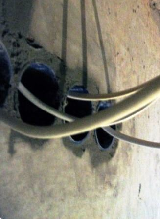
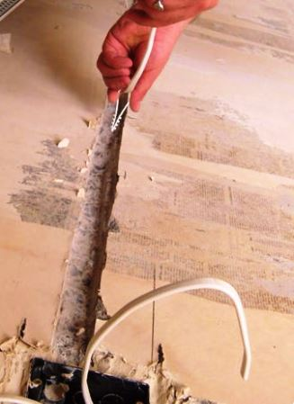
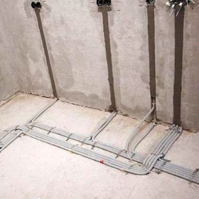

Качественный электромонтаж в Санкт-Петербурге и ленобласти, стаж 12 лет. Частный электрик, недорого и качественно.
Телефон - 8 904 642 08 57. Николай.

Замена проводки в Хрущевке.
Обращайтесь: проконсультирую, сделаю, будете довольны!
Постоянным клиентам скидки!
Здравствуйте, уважаемый гость. Я частный электрик, рад предложить Вам свои услуги, а именно поменять проводку в квартире. Моя специализация - монтаж электропроводки в квартирах и частных домах. Спектр услуг широкий: от небольшого ремонта до полной замены электрической проводки.
Посмотрите цены на странице – ниже! Хорошие скидки!
Сколько стоит поменять проводку в Хрущевке?
|
Вариант квартиры в Хрущевке. |
Цены за ремонт в рублях. |
|
Ремонт электрики однокомнатной квартиры в Хрущевке. |
20000 |
|
Двухкомнатной. |
24000 |
|
Трёхкомнатной. |
29000 |
|
Четырехкомнатной. |
32000 |
|
Частичный ремонт электреты в хрущевке. |
От 3000 |
|
Поменять розетку, выключатель в Хрущевке. |
200 - штука |
|
Подключит стиральную машину. |
1900 |
Несколько слов о себе:
- опыт работы свыше 15 лет;
- работу осуществляю качественно, проверенными сертифицированными материалами с помощью профессионального инструмента и современных технологий.

Замена электропроводки – довольно ответственное дело, обеспечивающее электробезопасность не только помещению, но, в первую очередь, его владельцу. Особенно это касается домов, построенных еще в советское время и даже раньше, так называемых, «хрущевок». Объясняется это просто: электрические провода тех времен просто не выдерживают нагрузки современной бытовой техники. Поэтому, если Вы являетесь хозяином хрущевки и имеете в доме много бытовых приборов, позаботьтесь о том, чтобы ваша проводка соответствовала всем нормам ГОСТ и технике безопасности.
А еще лучше – замените всю проводку. А я Вам в этом помогу.
В каких случаях необходимо заменить проводку:
- Часто выбивает автомат отключения электротока;
- В квартире большое количество электротехники;
- В электропроводке недостаточная проводимость;
- В доме алюминиевая проводка или проводка с малым сечением кабеля;
- Вы делаете перепланировку;
- Вы намерены перенести розетки и выключатели в другое место.
Особенности замени проводки в хрущевке.
Чаще всего замену в подобных домах делают в связи с проблемами с нагрузкой электросети. Являясь одной из наиболее востребованных и трудоемких услуг, данная работа должна проводиться профессионалом, то есть электриком.
Только мастер сможет правильно рассчитать и согласовать проект, а также подобрать марку кабеля и другие необходимые для работы материалы.
Сроки на замену.
Исходя из своей практики, скажу, что провожу замену проводки в двухкомнатной Хрущевке приблизительно за неделю (в каждом случае свои детали), в однокомнатной – за 3-4 дня.
В среднем, чтобы хрущевка выдержала всю нагрузку от электроприборов, необходима установка 10-12 автоматов. Иногда заказчики за каждым автоматом закрепляют отдельную бытовую технику.
Почему стоит обратиться ко мне:
- Качество. Замера проводки выполняются профессионально, согласно нормам и требованиям техники безопасности, а также требованиями ПУЭ и СНиП.
- Надежно. Работу выполняю на совесть, «как для себя»;
- Доступно. Ценовая политика рассчитана на заказчика со среднем уровнем дохода. При необходимости возможна оплата частями;
- Своевременно. Все услуги выполняю в срок, оговоренный с клиентом. Если возникает необходимость, то работаю сверхурочно и в выходные дни;
- Пунктуальность. Работаю от и до, в случае задержки предупреждаю;
- Гарантия. На все услуги в течение 12 месяцев и бесплатное обслуживание на такой же срок;
- Выезд и составление сметы – бесплатно.
Выполняя замену проводки в хрущевке, к каждому клиенту подхожу индивидуально, подстраиваясь под его требования и конкретную ситуацию.

Сколько будут стоить материалы.
Расценки на электропроводку.

Замена электропроводки в двухкомнатной квартире?.
Сколько стоит сделать внутреннюю проводку?.
Установка люстр и светильников.
Электромонтаж проводов в бане.